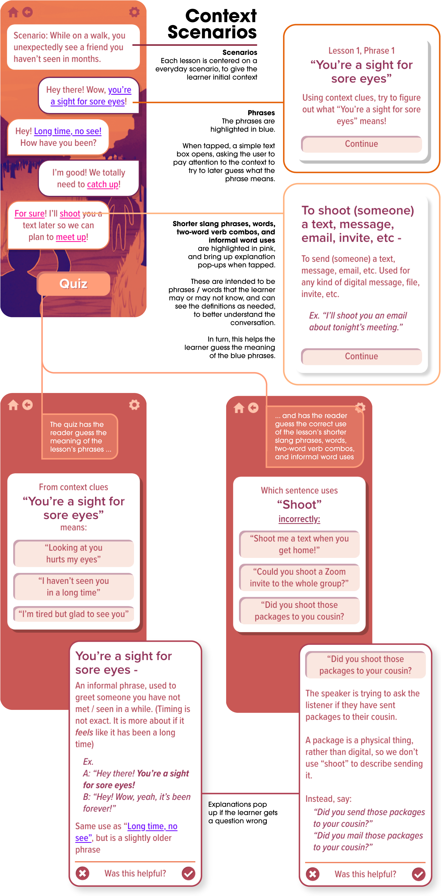
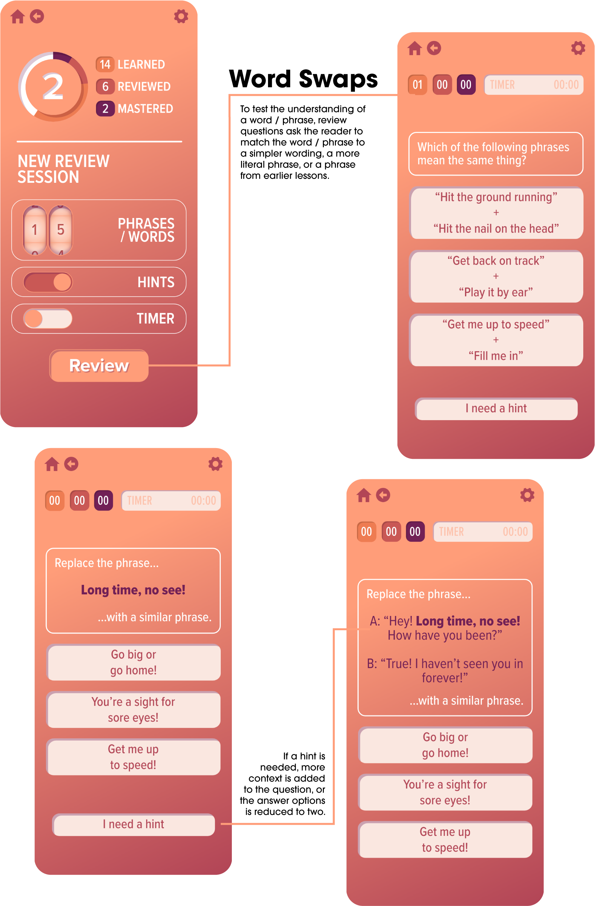
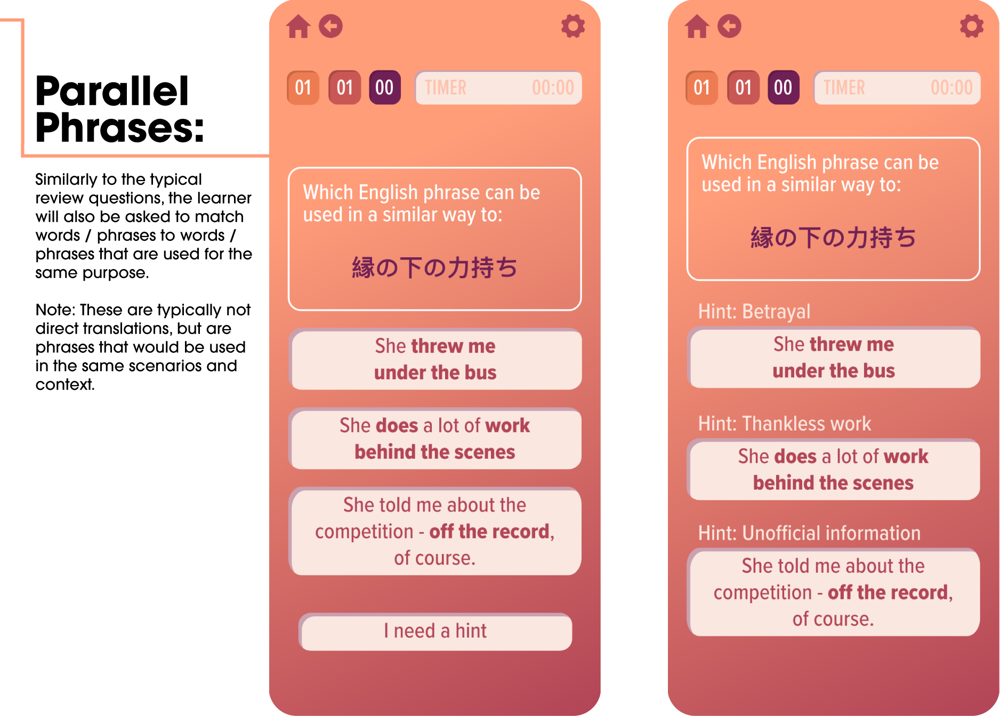

Crosstalk
What
Crosstalk is a mobile application, inspired by my experiences as an English Second Language tutor, that is targeted towards advanced English learners, to teach idioms, slang, and informal word uses.
Who
Imagine an advanced English learner. They have gotten as far as they can with traditional language learning - memorization, grammar, etc. - and primarily rely on immersion for their further learning.
In a fast pace meeting, they hear the following exchange:
“I had a light-blub moment and realized we're coming at this at the wrong angle. Can I run my idea by you?”
“I'm all ears! It's for sure time for us to put our heads together and get a handle on all the moving parts”
Although the learner understands these words, some longer phrases are very confusing and some of the shorter slang phrases, words, two-word verb combos, and informal word uses don't quite make sense. The meeting continues and the learner doesn't have time to ask for an explanation.
Why
In teaching advanced ESL students, I've seen how confusing English idioms and phrases can be. Memorization and vocabulary building aren't enough at this point. Knowing the definition of "bathwater" doesn't tell you much about what "Don't throw out the baby with the bathwater" means. I've seen success in teaching these phrases using the following approaches:
- Context Scenarios: I'll use the phrase in a scenario, and have my learner guess the meaning based on the scenario's context.
- Word Swaps: To understand a phrase, I'll use the same context, but swap in simpler wording, a more literal phrase, or a phrase the learner already knows.
- Parallel Phrases: After learning the meaning of a phrase, identifying phrases in the learner's mother tongue that are used in the same manner helps the learner understand when a phrase is to be used.
With Crosstalk, I wanted to explore how these approaches could translate from face-to-face tutoring to a digital platform.

Tap Start to begin lesson. Pay attention to the blue phrases so you can guess them later! Tap pink words and phrases if you don't understand them or need to review them.

